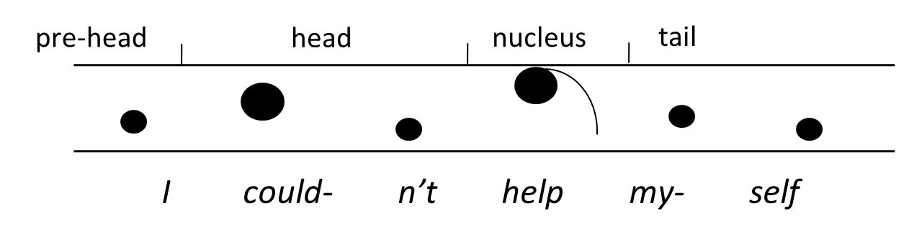
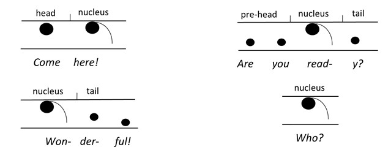
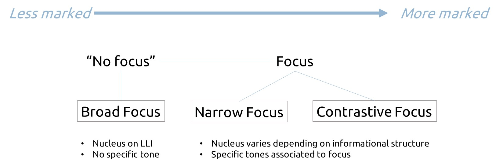
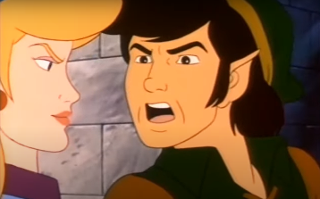

Intonation or suprasegmental or prosodic analysis covers phonological phenomena beyond segments (i.e. consonants and vowels). It studies three main dimensions: tone-unit segmentations, accent and intonation. It follows a completely different system of analysis from that of segmental phonetics and phonology. It is based on what is called the “British school of intonation”, which is rooted in three main principles:
Tonality is the segmentation of speech into tone units (also known as intonation units), the basic unit of analysis in the British school of intonation. Although tone units often coincide with clauses and punctuation, that is not always the case. Some basic rules (see below) can help identify where to delimitate tone units.
Tonicity is the identification of the nucleus of the tone-unit, i.e. its most prominent accented syllable. Be careful: accent ≠ stress. Although they often coincide, stress is lexical (at a word level, as in at’tack, ‘sentence, kanga’roo), whereas accent is suprasegmental (at a tone unit level).
Tone is the intonational movement that takes place throughout (and after) the articulation of the nucleus. Tones are associated to basic meanings in English.
Tone units are utterances produced in one breath, normally preceded and followed by silence, and usually corresponding to syntactic structures – clauses, mainly. Therefore, tone-unit breaks usually coincide with punctuation marks (full stops, exclamation marks, questions marks, commas…). There are, however, a few exceptions to these correspondences.
Tone units have an underlying structure made up of four parts:
Pre-head: All of the unaccented syllables before the first stressed syllable in the tone unit, (also called the anacrusis).
Head: Starts with the first accent and includes all the syllables up until the nucleus.
Nucleus: The most prominent accented syllable of the tone unit, to which a tone is associated. It is usually (but not always!) the last lexical item (LLI) – the last “content word”. “Function” or grammatical words (prepositions, auxiliaries, articles, etc.) after the LLI are normally unaccented and part of the tail.
Tail: All of the unstressed syllables after the nucleus.

Visual representation of the tone-unit’s underlying structure (as per the tonetic interlinear model)
Out of all of these parts, the only obligatory one is the nucleus. That means that there can be a tone unit made up of just one (nuclear) syllable:

For the Agrégation, you will only need to delimitate the external boundaries of the tone unit, but it is always useful to be aware of how it is internally articulated. To delimitate them, use single vertical bars (|) to represent short pauses (commas) and double vertical bars for long ones (||) (full stop, exclamation or question mark, change of speaker…). Do not use punctuation in your tone-unit delimitation.
Honestly, I don’t think he cares. 🡪 | Honestly | I don’t think he cares ||
He’s the only person I’ve ever trusted. Just him.
🡪 | He’s the only person I’ve ever trusted || Just him ||
Two main cases:
Final vocatives: vocatives (i.e. words using to refer to someone when talking to them) tend to be part of the tail of the tone unit when they come at the end:
But I don’t want to go, dad! 🡪 | But I don’t want to go dad ||
What are you doing, Mary? 🡪 | What are you doing Mary ||
If we move the vocative to the beginning of the sentence, however, the comma that follows it does mark a tone-unit break:
But dad, I don’t want to go! 🡪 | But dad | I don’t want to go
||
Mary, what are you doing? 🡪 | Mary | what are you doing? ||
Final reporting clauses: final reporting clauses also tend to be part of the tail at the end of tone units.
“I have no idea”, he said 🡪 | I have no idea he said ||
That’s impossible, I’m afraid 🡪 | That’s impossible I’m afraid ||
That’s all it takes, I suppose 🡪 | That’s all it takes I suppose ||
Cases of coordination (clauses or phrases coordinated by and, or, but…). The coordinating conjunction becomes the pre-head of the following tone unit.
He knocked on the door but no-one came 🡪 | He knocked on the door |
but no-one came ||
A car drove by and stopped at the traffic light
🡪 | A car drove by | and stopped at the traffic light ||
Do you want apples or grapefruit? 🡪 | Do you want apples | or grapefruit
||
After a defining relative clause (as opposed to a non-defining relative clause):
My aunt who has one eye is eighty years old 🡪 | My aunt who has one
eye | is eighty years old ||
The book which I read yesterday was boring 🡪 | The book which I read
yesterday | was boring ||
NB: Non-defining relative clauses have breaks before and after. Here, breaks coincide with punctuation:
My aunt, who has one eye, is eighty years old
🡪 | My aunt | who has one eye | is eighty years old ||
The book which I read yesterday was boring
🡪 | The book | which I read yesterday | was boring ||
Long subject: There is a tone unit break – a short pause to catch your breath! – (without a comma) after a long grammatical subject:
The bicycle that my aunt bought me for Christmas was completely
destroyed in the accident 🡪
| The bicycle that my aunt bought me for Christmas | was completely
destroyed in the accident ||
Initial sentence adverbial: Adverbs that affect the whole clause, usually followed by a comma, tend to have their own tone unit.
Hopefully, we will never have to see him again.
🡪 | Hopefully | we will never have to see him again ||In fact, most people don’t even floss.
🡪 | In fact | most people don’t even floss ||
Topicalized object: Whenever the canonical SVO order (subject-verb-object) is altered to OSV, the object tends to be uttered in its own tone unit. A comma tends to be added in these cases as well.
That kind of pizza, I’ll never eat vs. I’ll never eat that kind of pizza
🡪 | That kind of pizza | I’ll never eat|| vs. | I’ll never eat that kind of pizza ||Those dogs, I’m terrified of vs I’m terrified of those dogs
🡪 | Those dogs | I’m terrified of || vs. | I’m terrified of those dogs ||
Parenthetic phrases or clauses: Here, too, punctuation confirms the tone unit break.
Jeanine, of course, is not invited.
🡪 | Jeanine | of course | is not invited ||I think, unless I got it wrong, that he’s Brazilian.
🡪 | I think | unless I got it wrong | that he’s Brazilian ||
Tag questions tend to have their own tone-unit, especially reverse-polarity tags (“checking tags”): tags that are negative when the main verb is positive, or vice-versa.
Positive-negative
We could do it tomorrow, couldn’t we?
🡪| We could do it tomorrow | couldn’t we ||
They’ve got their books, haven’t they?
🡪 | They’ve got their books | haven’t they ||
Negative-positive
It’s not finished, is it?
🡪 | It’s not finished | is it ||
It wasn’t a disaster, was it?
🡪 | It wasn’t a disaster | was it ||
Constant polarity tags (positive-positive) tend to pertain to the same tone unit as the rest of the clause:
You’re ready to go, are you?
🡪 | You’re ready to go are you ||
Close the window, would you please?
🡪 | Close the window would you please ||
For more on tonality: Wells, J.C. (2006). English Intonation: An Introduction. Cambridge university press. (pp. 187-205)
The nucleus is the most prominent accented syllable (and not THE WHOLE WORD) of a tone-unit.
In most “neutral utterances” (unmarked contexts), most stressed words are also accented and the distinction does not seem to matter. In these cases, the nucleus tends to fall on the LLI.
The nucleus is informationally important: it signals new or important information, which in canonic syntax tends to come at the end of utterances in English. To signal the nucleus, we underline it:
| I’m going to the cinema ||
| Do you like cookies ||
| I’d like to speak to the manager ||
All content words here contain new information
🡪 nucleus on the stressed syllable of the LLI.
These neutral cases are said to be in / carry broad focus: everything is considered new information; therefore, everything is in focus.
Exceptions
In a handful of cases, some lexical items in final position tend to not carry the nucleus:
Empty words:
things, people, places, the man, the woman, the guy…
| I keep seeing things || vs. | I keep hallucinating
||
| What are you going to tell people || vs. | What are you going
to say ||
| They’re really going places || vs. | They’re really
successful ||
Common adverbs of time and place in final position
| They’re coming tomorrow || | Who’s replacing her now ||
The nucleus can shift from the LLI when the LLI has already been introduced into the context, either literally (in a sentence earlier) or situationally (in the spatial/temporal context). In such cases, the tone-unit is said to be in narrow focus. Old information is de-accented relegated to the tail of the tone-unit.
A: | We mustn’t forget to invite the Watsons ||
B: | But we always invite the Watsons ||
A: | What’s wrong with inviting the Watsons ||
B: | There’s nothing wrong with inviting the Watsons ||
C: | How do you mean there’s nothing wrong with inviting the Watsons
||
Pro-forms
Pronouns or other words used to replace phrases, nouns, etc. :
one, any, some, do, did, so…
(they usually refer to old information already
introduced)
| Where’s your name-tag || | I haven’t got one ||
(one replaces name-tag, old info)
| Do you have any sugar || | I don’t have any ||
(any acts as a pronoun for sugar)
I If you’re not okay with it | just say so || (so
replaces a whole clause)
| Mary got more candy than Kimberly did || (did replaces
a whole clause)
Broad vs. Narrow focus
| Any news from home ||
| Our daughter moved to China ||
All content words contain new information
= the whole IP is in focus 🡪 broad focus
| Where did your daughter move to? ||
| Our daughter moved to China. ||
Only China contains new information, even though it coincides
with the LLI.
= only part of the IP is in focus 🡪 narrow focus
| Who moved to China? ||
| Our daughter moved to China. ||
Only daughter contains new information
= only part of the IP is in focus 🡪 narrow focus
Contrastive focus is a special case of focus through which the speaker draws attention to a contrast they are making:
| You may have started your essay | but have you finished your essay ||
Any word can bear contrastive focus, including function words, if it is being contrasted (explicitly or indirectly) with another element:
| I thought he was married | (neutral)
| I thought he was married | (he no longer is)
| I thought he was married| (him, not her)
| I thought he was married| (even if you said he wasn’t)
| I thought he was married | (not somebody else)

The nucleus is associated to a tonal movement. In English, there are 4 main tones (and an extra, les common fifth one), and they are associated to enunciative meanings:
Fall: declarative modality, completeness, finality, certainty, exclamation, neutrality.
Rise: interrogative modality, incompleteness, non-finality, doubt, friendliness/kindness.
Fall-rise: usually associated to contrast, contradiction, warnings. Also, an alternative to incompleteness like rise.
Rise-fall: usually associated to surprise, enthusiasm and/or sarcasm.
Level: non-finality, usually present in parentheticals.
Declarative sentences and responses to open questions:
| \Yes | \sure! ||
| I’ll \see you tonight ||
| Where do you come from? || | \London. ||
Wh- questions and second halves of alternative questions
| Where do you \come from? ||
| Would you like /tea | or \coffee? ||
Imperatives (orders, commands)
| Shut \up || And close the \door ||
Exclamations and greetings
| Good \morning Paul! | Congratu\lations! ||
Question tags (if the speaker is not really doubting)
| You are coming to the \party, | \aren’t you? ||
Yes-no questions (esp. declarative questions, i.e. questions with no morphosyntactic marks of interrogation like subject-verb inversion or do-auxiliary)
| Can you speak /Mandarin? ||
| He took his /passport? ||
Echo questions and pardon wh- questions
| I’ve just met \John || | /John? ||
| I’ve just met \John || | /Who have you met? ||
| /What? || /Pardon? || /Right? || /Really? || /Did he? ||
Lists (except the last item)
| I’ll buy some /bread, | /flour, | /salad, | and \apples.
Dependent clauses
| When we a/rrived, | there were people \everywhere. ||
| I’d like to visit \Wales, | when I have some /money. ||
Question tags (if the speaker is really doubting)
| You are coming to the \party, | /aren’t you? ||
Contrast (but a fall is also possible)
| I think they will sur\render || | They \/won’t surrender! ||
| Are you a vege/tarian? || | Well I \/used to be. ||
Initial adverbials
| \/Fortunately, | I was \wrong. ||
| In the \/first place, | I’ll go to \see him. ||
Initial dependent clauses (as an alternative to a rise)
| When we a\/rrived, | there were people \everywhere. ||
Implicational fall-rise
The fall-rise implies something further: a contrast between what is expressed and what has not, or not yet, been expressed.
| Well I know her \/face | but I can’t remember her \name ||
The speaker has the choice of making the contrast explicit, as in the second version, or leaving it implicit, as in the first. Whether explicit or implicit, the implication is still hinted at by the fall-rise intonation.
The unexpressed implication can usually be formulated in a clause beginning with but..., which would make it explicit. The implicational fall-rise can be thought of as the tone that signals a but... to come.
Used for highly marked contexts. 🡪 Very rare! Not to be confused with the Fall-rise.
Surprise, excitement
| I passed the e/\xam! | | /\Ohhh, | /\ woooow!! ||
Challenging the listener
| You don’t think it’s im/\portant, | /\do you? ||
| Well you bloody /\ought to! ||
Sarcasm
| Well ex/\cuse me, princess! ||